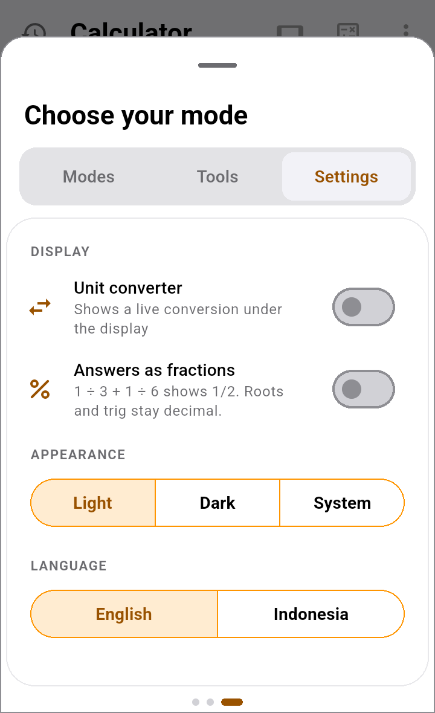

← All guidesEN · ID
Modes, Formulas & Cash Log
The calculator has several modes. This guide covers switching between them, using ready-made formulas, and keeping a log of money in and out.
1. Switching modes
- Tap the mode icon (a small square with + − × =) at the top right of the calculator.
- Choose your mode has three cards. Swipe left and right, or tap the tabs above them:
- Modes: ways to calculate.
- Tools: extra math tools.
- Settings: display, appearance and language.
- On the Modes tab, tap the mode you want. The sheet closes as soon as you pick one. On Tools and Settings, swipe down or tap outside to close it.

| Mode | What it is for |
|---|---|
| Basic | Everyday sums. |
| Scientific | Powers, roots, sin/cos/tan, logs, memory. |
| Math Notes | Sums line by line, like a notebook. See the Math Notes guide. |
| Formulas | Ready-made formulas: loans, discounts, VAT, split bill and more. |
| Cash Log | A log of money in and out, with its balance. |
| Landscape | Garden materials: soil, mulch, turf and the like. |
| Construction | Building materials, including feet-inch-fraction sizes (5' 3-1/2"). |
2. The buttons on the calculator
- Clock icon (top left): calculation history.
- Rectangle icon: turns to the landscape layout, which has more keys.
- Mode icon: opens Choose your mode.
- Three dots ⋮: Copy, Paste, Record in Cash Log, light/dark theme, and Help.
- The ⌫ key (bottom left) deletes one character. AC clears everything. Swiping across the number also deletes its last digit.
3. Formulas: ready-made formulas
No need to remember a formula. Pick one and fill in the numbers.
- Open the Formulas mode.
- Tap a formula. The choices: Loan, Stacked discount, Split bill, BMI, Savings interest, VAT, Margin & markup, Fuel cost, Recipe portions, Electricity bill, Cost per unit, Break-even and Salary with overtime.
- Fill in the fields. The results appear underneath straight away.
- Tap a result to Copy it or Record in Cash Log.
A result of "—"means a field is still empty, or the sum is impossible (dividing by 0 people, for example). Fill in the numbers.
4. Writing your own formula
- In Formulas, tap New formula.
- Fill in Formula name, for example "Selling price".
- Tap Add a number for each number you will fill in later, for example "Cost" and "Profit percent". Under each field is the name to use in the formula, for example Use as cost.
- Tap Add a result, give it a name, and write how to work it out, for example
cost + cost * profitPercent / 100. A result may use the results above it. - Tap Save. Your formula appears at the top of the list. The three dots beside it hold Edit and Delete.
5. Cash Log: money in & out
A simple cash book. No categories or charts, just money in, money out, and the balance.
Quickest way: from the calculator
- Work out the sum as usual, for example
25 × 4. - Tap ⋮ → Record in Cash Log.
- Choose Money in or Money out. The amount is already filled in. Add a Description (optional) and a date if you like, then tap Save.
Seeing and managing entries
- Open the Cash Log mode. At the top is the BALANCE, then money in and out per month, and the list of entries with a running balance.
- Tap an entry to edit or delete it.
- Export CSV saves everything to a file you can open in Excel or Google Sheets.
From Formulas tooA formula's result (a bill total, say) can be recorded directly: tap the result, then Record in Cash Log.
6. Calculation history
- Tap the clock icon at the top left to see earlier sums. Tap a row to use it again.
- From the history you can Save (export to TXT, DOCX or PDF), Select rows, or Clear everything.
7. Settings and language
Open the mode icon, then the Settings tab:
- Unit converter: shows a unit or currency conversion right under the answer.
- Answers as fractions:
1 ÷ 3 + 1 ÷ 6shows as 1/2, not 0.5. Roots and trigonometry stay decimal. - Light / Dark / System: a light or dark theme, or follow the phone's setting.
- Language: English or Indonesia. The whole app switches at once and keeps your choice. Until you pick, it follows the phone: an Indonesian phone opens in Indonesian.
